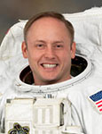

Lyndon B. Johnson Space Center
Houston, Texas 77058
|
National Aeronautics and Space Administration Lyndon B. Johnson Space Center Houston, Texas 77058 |
 |
Biographical Data |
||
Edward Michael "Mike" Fincke (COLONEL, U.S. AIR FORCE, RETIRED)
NASA Astronaut
PERSONAL DATA: Born March 14, 1967, in Pittsburgh, Pennsylvania, but considers Emsworth, Pennsylvania, to be his hometown. Married to the former Renita Saikia of Houston, Texas. They have three children. In addition to time with his family, Col. Fincke enjoys travel, geology, astronomy, learning new languages and reading. He is conversant in Japanese and Russian. His parents, Edward and Alma Fincke, reside in Emsworth, Pennsylvania. Renita's parents, Rupesh and Probha Saikia, formerly of Assam, India, reside in Houston, Texas.
EDUCATION: Graduated from Sewickley Academy, Sewickley, Pennsylvania, in 1985. He attended the Massachusetts Institute of Technology (MIT) on an Air Force Reserve Officers' Training Corps (ROTC) scholarship and graduated in 1989 with a Bachelor of Science in Aeronautics and Astronautics as well as a Bachelor of Science in Earth, Atmospheric and Planetary Sciences. This was followed by a Master of Science in Aeronautics and Astronautics from Stanford University in 1990. He was awarded an Associate of Science Degree in Earth Sciences (geology) from El Camino College in Torrance, California, in 1993 and a second Master of Science in Physical Sciences (planetary geology) from the University of Houston - Clear Lake in 2001.
SPECIAL HONORS: In addition to two NASA Distinguished Service Medals and three NASA Spaceflight Medals, Colonel Fincke is a recipient of the first International Space Station Leadership Award as well as the Defense Superior Service Medal, Legion of Merit, and Meritorious Service Medals, among others for his military service. He is a Distinguished Graduate from the U.S. Air Force ROTC, Squadron Officer School and Test Pilot School Programs and the recipient of the U.S. Air Force Test Pilot School Col. Ray Jones Award as the Top Flight Test Engineer/Flight Test Navigator in class 93B.
EXPERIENCE: Col. Fincke graduated from MIT in 1989 and immediately attended a summer exchange program with the Moscow Aviation Institute in the former Soviet Union where he studied cosmonautics. Upon graduation from Stanford University in 1990, he entered the United States Air Force where he "washed out" of the Euro-NATO Joint Jet Pilot Training program and then was reassigned as a Space Systems Engineer and a Space Test Engineer at Los Angeles Air Force Base. As a Flight Test Engineer at Edwards and Eglin Air Force Bases, he flew in F-16 and F-15 aircraft. In January 1996, he reported to the Gifu Test Center, Gifu Air Base, Japan, where he was the United States Flight Test Liaison to the Japanese/United States XF-2 fighter program. Col. Fincke has over 1,100 flight hours in more than 30 different aircraft types.
NASA EXPERIENCE: Selected by NASA in April 1996, Col. Fincke reported to the Johnson Space Center where he completed two years of training and evaluation. He was assigned technical duties in the Astronaut Office Station Operations Branch, serving as an International Space Station Capsule Communicator (CAPCOM), a member of the Crew Test Support Team in Russia and as the space station Crew Procedures Team Lead. He also served as a backup crewmember for Expeditions 4 and 6 as well as backup commander for Expeditions 13 and 16. He is qualified to fly as a left-seat flight engineer (co-pilot) on the Russian Soyuz TM and TMA spacecraft. He was the commander of the second NASA Extreme Environment Mission Operations (NEEMO 2) mission, living and working underwater for 7 days in May of 2002, and was on the CAVES 2012 crew, living underground and exploring for six days, sponsored by the European Space Agency in September 2012.
Col. Fincke is currenly in the Exploration Branch of the Astronaut Office where he supports NASA's Commercial Crew Program and serves as a space station CAPCOM.
SPACEFLIGHT EXPERIENCE: Expedition 9 (April 18 to October 23, 2004). Expedition 9 launched from the Baikonur Cosmodrome, Kazakhstan, aboard the Soyuz TMA-4 spacecraft. As the NASA space station science officer and flight engineer, Col. Fincke spent six months aboard the station, continuing science operations, maintaining station systems and performing four spacewalks. The Expedition 9 mission concluded with undocking from the station and safe landing back in Kazakhstan on October 23, 2004.
Expedition 18 (October 12, 2008 to April 8, 2009). Expedition 18 launched from the Baikonur Cosmodrome, Kazakhstan, aboard the Soyuz TMA-13 spacecraft. As the commander, Fincke and his three-person crew helped prepare the station for future six-person crews and hosted the space shuttle crews of STS-126 and STS-119. The Expedition 18 mission concluded with undocking from the station and safe landing back in Kazakhstan on April 8, 2009.
STS-134 (May 16 to June 1, 2011). The STS-134 mission marked the final flight of Space Shuttle Endeavour. Fincke served as mission specialist 1 on the flight deck and as one of the spacewalkers and robotic arm operators. The STS-134 crew delivered the Alpha Magnetic Spectrometer (AMS), a state-of-the-art cosmic ray particle physics detector, to the International Space Station.
Col. Fincke has a total of 381 days, 15 hours and 11 minutes in orbit and has logged 48 hours and 37 minutes of EVA time on nine spacewalks.
JANUARY 2014